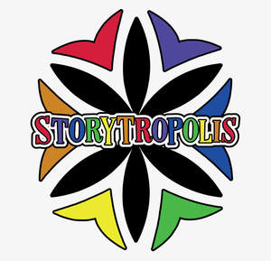

Trade Mark Journal No.2025/014 4 April 2025
UK00004174506 17 March 2025 (41)

- Class 41
- Arranging of visual and musical entertainment; Entertainment in the nature of dance performances; Entertainment in the nature of ballet performances; Screenplay writing; Interactive entertainment; Presentation of musical performances; Creation [writing] of educational content for podcasts; Arranging of visual entertainment; Songwriting; Presentation of theatrical performances; Audio, video and multimedia production, and photography; Digital video, audio and multimedia entertainment publishing services; Presentation of live comedy performances; Performance of dance, music and drama; Entertainment in the nature of orchestra performances; Publishing of stories; Creation [writing] of podcasts; Presentation of live entertainment performances; Presentation of musical performance; Animated musical entertainment services; Entertainment services in the form of cinema performances; Organization, production and presentation of theatrical performances; Entertainment in the nature of magic shows; Presentation of dramas; Scriptwriting, other than for advertising purposes; Organising of audience participative games; Entertainment in the nature of live dance performances; Cinematographic adaptation and editing; Musical entertainment; Organisation, production and presentation of theatrical performances; Production of audio entertainment; Writing screenplays; Entertainment services in the nature of interactive television programmes; Audio and video production, and photography; Entertainment services in the nature of organizing social entertainment events; Artistic management of music venues; Entertainment in the nature of theater productions; Entertainment in the nature of live performances and personal appearances by a costumed character; Organizing and presenting displays of entertainment relating to style and fashion; Production of entertainment in the form of a television series; Educational services for the dramatic arts; Entertainment services featuring fictional characters; Artistic management of musical shows; Publishing of scripts for theatrical use; Online interactive entertainment; Presentation of movies; Scriptwriting services; Theatrical performances both animated and live action; Services for the production of entertainment in the form of film; Interactive entertainment services; Script writing services; Instruction in the field of the visual arts; Music performances; Film production for entertainment purposes; Entertainment in the nature of ongoing game shows; Multimedia publishing of books; Entertainment services in the nature of arranging social entertainment events; Presentation of live entertainment events; Presentation of live dance performances; Entertainment in the nature of dinner theater productions; Entertainment in the nature of live performances by musical bands; Production of a continuous series of animated adventure shows; Conducting workshops and seminars in art appreciation; Conducting of workshops and seminars in art appreciation; Entertainment in the nature of symphony orchestra performances; Jazz music entertainment services; Providing online entertainment in the nature of game shows; Publishing of music; Organizing cultural and arts events; Production of animation; Entertainment services in the form of musical group performances; Presentation of musical concerts; Presentation of orchestra performances; Entertainment; Theatre entertainment; Television entertainment; Entertainment services; Radio entertainment; Live entertainment; On-line entertainment; Education, entertainment and sport services; Provision of entertainment; Television and radio entertainment services; Radio and television entertainment services; Organising of entertainment; Artistic management of entertainment venues; Entertainment services for children; Production of live entertainment; Television and radio entertainment; Radio and television entertainment; Entertainment, sporting and cultural activities; Online entertainment services; Children's entertainment services; Provision of live entertainment; Production of live entertainment events; Entertainment information services; Booking of entertainment halls; Holiday centre entertainment services; Entertainment services in the form of television programmes; Arranging of competitions for education or entertainment; Provision of radio and television entertainment services; Arranging of festivals for entertainment purposes; Exhibition services for entertainment purposes; Entertainment services in the nature of contests; Organization of entertainment competitions; Arranging of entertainment shows; Production of films for entertainment purposes; Organization of entertainment events; Road shows being entertainment services; Conducting of entertainment events; Organization of competitions [education or entertainment]; Competitions (Organization of -) [education or entertainment]; Organization of competitions for education or entertainment; Entertainment services in the form of concert performances; Services providing entertainment in the form of live musical performances; Entertainment in the form of live musical performances (Services providing -); Organisation of entertainment services; Entertainment services for producing live shows; Entertainment in the form of television programmes (Services providing -); Providing educational entertainment services for children in after-school centers; Entertainment services provided for children; Provision of entertainment services for children; Corporate entertainment services; Live entertainment services; Provision of educational entertainment services for children in after school centers; Organisation of competitions for education or entertainment; Camp services (Holiday -) [entertainment]; Holiday camp services [entertainment]; Entertainment services in the nature of competitions; Entertainer services; Live musical theater performances; Performance of music and singing; Book publishing; Performing of music and singing; Direction or presentation of plays; Education; Pre-school education; Education and instruction; University education services; Education, teaching and training; Education academy services; Music education; Training and education services; Provision of education courses; Educational services for providing courses of education; Providing of education; Entertainment, education and instruction services; Primary education services; Adult education services; Residential education courses; Management of education services; Education services related to the arts; Singing education; Education and training in the field of music and entertainment; Education information services; Education services relating to conservation; Education services relating to music.
Emmanuel Peters